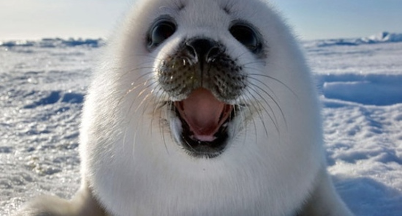

Полосaтый тюлень
Кутырев Илья 29 марта 2019г.
Полосатый тюлень, или крылатка (Histriophoca fasciata) — вид семейства настоящих тюленей. Получил своё название благодаря своеобразной окраске. Взрослые самцы имеют очень контрастный окрас — общий тёмный, почти чёрный фон с белыми полосами, опоясывающими тело в нескольких местах. Самки имеют схожий тип окраски, но менее контрастный, и общий фон у них светлее, а полосы иногда сливаются и часто почти неразличимы. Неполовозрелые звери после первой линьки одноцветно серые. У новорождённого белый, густой мех, держится примерно две недели. Длина тела взрослого животного 150—190 см, масса 70—90 кг. В детёныше при рождении 70—80 см. Весной и в начале лета этот тюлень встречается во льдах Берингова и Охотского морей, а также на юге Чукотского моря.
Читать далееМорской заяц
Пастухов Дмитрий 18 июня 2018г. Морской заяц, или лахтак (Erignathus barbatus) — ластоногое семейства тюленьих (Phocidae). Единственный вид рода Erignathus. Название «лахтак», в северных говорах означающее не только конкретный вид тюленей, но и тюленью шкуру (с салом или идущую на ремни). Название «морской заяц», как предполагается, дали тюленю русские зверобои. Объяснений такому названию два — «заячья» пугливость крупного животного и его манера передвигаться по суше прыжками, сильно отталкиваясь задними ластами.
Читать далееБайкальская нерпа
Кузьмина Ольга 19 октября 2018г.
Байкальская нерпа, или байкальский тюлень (лат. Pusa sibirica) — один из трёх пресноводных видов тюленя в мире, эндемик озера Байкал, реликт третичной фауны. Средняя длина тела взрослой нерпы — 165 см (от конца носа до конца задних ластов). Вес от 50 до 130 кг, самки по массе больше самцов. Линейный рост заканчивается к 17—19 годам, а весовой продолжается ещё в течение ряда лет и возможен до конца жизни. Живут нерпы до 55 лет.
Читать далее